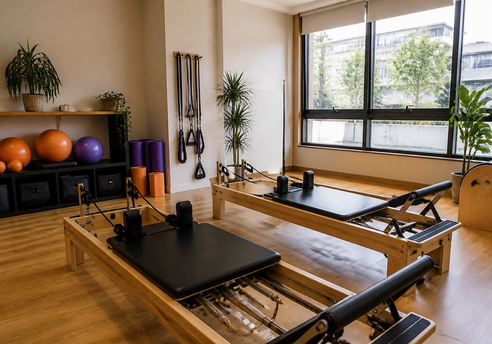

Pilates em destaque
O serviço aparece logo no início para quem já procura aula, rotina e movimento.
Pilates e saúde em Jardim da Penha
Conceito visual inspirado nas cores públicas do Espaço Vitta Saúde para transformar informação de Instagram e diretórios em uma rota simples de contato.

A presença pública já fala em mais saúde, longevidade, força e equilíbrio. O site deixa esse posicionamento fácil de entender fora do feed.
Informações públicas organizadas
As áreas e temas devem ser confirmados pelo Espaço Vitta antes de qualquer publicação oficial.
O serviço aparece logo no início para quem já procura aula, rotina e movimento.
Texto curto para explicar que há outros cuidados citados em fonte pública, sem listar algo não confirmado.
A copy conecta força, equilíbrio e constância sem prometer melhora clínica ou prazo.
Endereço, telefone e CTA aparecem próximos para a pessoa sair da dúvida e falar com o espaço.
Como marcar
A pessoa entende o foco em pilates e cuidados de saúde sem abrir vários links.
Confere o endereço em Jardim da Penha e toca no contato público.
O Espaço Vitta confirma horários, disponibilidade e a melhor forma de começar.
Contato público
O demo usa informações públicas e uma imagem genérica. Fotos do Instagram, pacientes e artes autorais não foram copiadas.
Rua Maria Eleonora Pereira, 555, loja 01, Jardim da Penha, Vitória/ES
Instagram público citado: @vittasaudee
Ligar agoraAntes de enviar
Não. É um conceito visual criado com informações públicas para mostrar uma possibilidade de página própria.
Não. A imagem do hero é gerada e genérica, sem pessoas e sem copiar materiais do perfil.
Não. A página fala de movimento, rotina e contato. Qualquer orientação depende da avaliação do espaço.